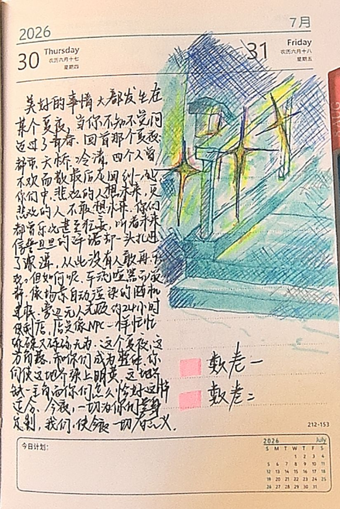
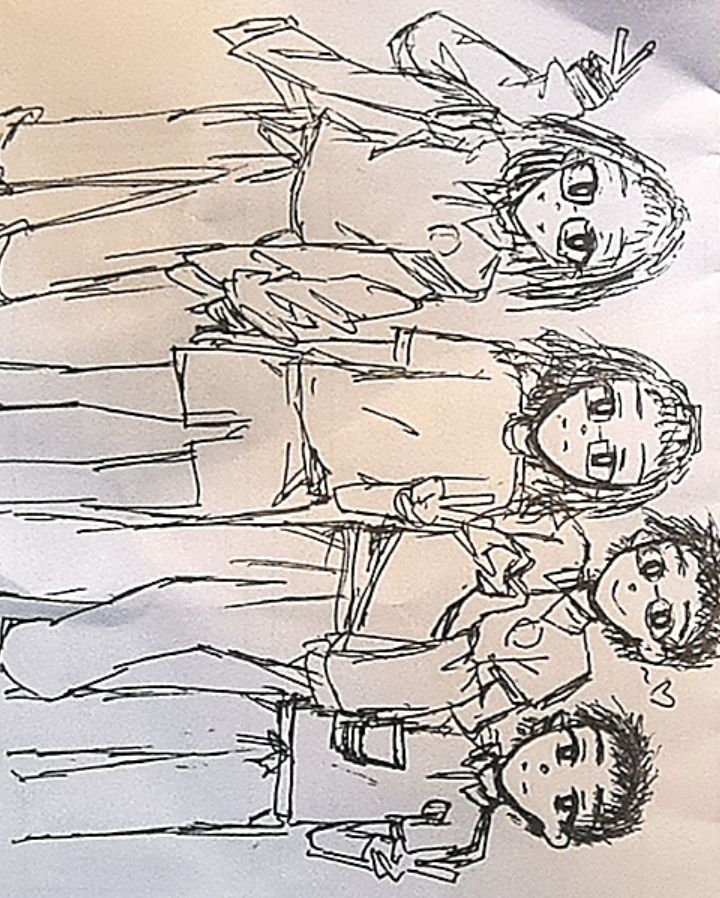

键入以搜索…
匹配算法：把输入按空格拆分，单独匹配每一段输入（不区分大小写，仅匹配文章文本内容），输出取或后的结果。
模糊搜索似乎很难搞，目前没有相关打算。
键入以搜索…
匹配算法：把输入按空格拆分，单独匹配每一段输入（不区分大小写，仅匹配文章文本内容），输出取或后的结果。
模糊搜索似乎很难搞，目前没有相关打算。
并不前情提要的前情提要：某个夏（秋）夜。

许多美好的事情发生在夏夜。许多人回想自己的青春时，用一个夏夜象征它。
当你不知不觉迈过了青春，回首那个夏夜：都市、天桥、冷清的角落。四个人曾经因为各种原因不欢而散而又最后短暂重逢。
你们中，悲观的人会想到未来，更悲观的人不敢再想未来。
你们都被那个喜欢说大话的神灵许诺一个未来，你们都曾以为自己怎么这么巧刚好成了这个幸运儿，你们都曾自信乐观甚至狂妄，在那个神灵信誓旦旦的许诺中一厢情愿地一头扎进了深潭然后你们
坠落。
于是从此你们没人再敢乐观。
但如何呢？你们在那儿杵了半个小时，晚上八点半的天奇怪地黑，车子闪着灯从旁边驶过那么吵但是你们好像没听见，根本没人光顾的 24 小时便利店里店员忙忙碌碌又碌碌无为但你们好像没看见，在于你们这个世界上任何东西在至少这一刻都变成地球 Online 自动渲染的场景模型，这个世界上除了你们其他任何人至少在这个角落全部沦为了 NPC。
这个夏夜，这方角落，和你们成为一个整体。这个冷清的角落缺了四个主角而你们怎么恰好这么适合这个镜头，你们发着耀眼夺目的明黄色光芒而这个地方怎么恰好就这么应该被打上这样的光。
今夜，此地，此刻，一切为你们量身定制。
我们，使今夜的一切布景，拥有意义。
字面意思，写于后天。
我想我们好像忘了点什么。我们居然四个人没能一起照个相。
显然我们不能在不依靠别人的情况下完成这件事，并且看来我们中的所有人都耻于在这种地方找路人干这种事，所以注定我们留不下这样的照片了（sob）
